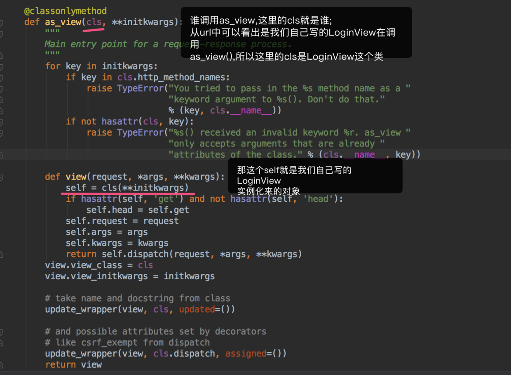

请求模块 CBV源码分析 FBV(function base views) 就是在视图里使用函数处理请求.
CBV(class base views) 就是在视图里使用类处理请求.
Python是一个面向对象的编程语言,如果只用函数来开发,有很多面向对象的优点就错失了(继承、封装、多态).所以
Django在后来加入了Class-Based—View.可以让我们用类写View.
这样做的优点主要下面两种:
提高了代码的复用性,可以使用面向对象的技术,比如Mixin(多继承) 可以用不同的函数针对不同的HTTP方法处理,而不是通过很多if判断,提高代码可读性 CBV简单示例 我们简单来看下如何使用CBV模式,然后再分析下源代码是如何执行的,源码之后在讲解urls.py中进行路由配置
1 2 3 urlpatterns = [ url(r'^login/$' ,views.LoginView.as_view()), ]
views视图中
1 2 3 4 5 6 7 8 9 10 11 12 13 14 from django.shortcuts import render,HttpResponse,redirectfrom django.views import Viewclass LoginView (View ): def get (self,request ): print ("GET" ) return render(request,"login.html" ) def post (self,request ): print ("POST" ) user=request.POST.get("user" ) pwd=request.POST.get("pwd" ) return HttpResponse("OK" )
进行测试http://localhost:8000/index/
1 2 3 dispatch get ret <HttpResponse status_code=200 , "text/html; charset=utf-8" >
源码分析 我们分析源码从路由配置开始,
1 2 3 4 5 6 7 8 9 10 11 from django.conf.urls import urlfrom django.contrib import adminfrom app01 import viewsurlpatterns = [ url(r'^admin/' , admin.site.urls), url(r'^login/' , views.LoginView.as_view()), ]
这里的url配置我们可以看出,浏览器访问index会执行它对应的函数views.LoginView.as_view(),那么views.LoginView.as_view()又干了什么呢?
首先我们去views.LoginView找要执行的as_view(),你会发现找不到,我们接着去他的父类View里边找找到了,我们把代码贴出来分析一下, 1 2 3 4 5 6 7 8 9 10 11 12 13 14 15 16 17 18 19 20 21 22 23 24 25 26 27 28 29 30 31 32 33 @classonlymethod def as_view (cls, **initkwargs ): """ 请求-响应过程的主要入口点。 """ for key in initkwargs: if key in cls.http_method_names: raise TypeError("You tried to pass in the %s method name as a " "keyword argument to %s(). Don't do that." % (key, cls.__name__)) if not hasattr (cls, key): raise TypeError("%s() received an invalid keyword %r. as_view " "only accepts arguments that are already " "attributes of the class." % (cls.__name__, key)) def view (request, *args, **kwargs ): self = cls(**initkwargs) if hasattr (self, 'get' ) and not hasattr (self, 'head' ): self.head = self.get self.request = request self.args = args self.kwargs = kwargs return self.dispatch(request, *args, **kwargs) view.view_class = cls view.view_initkwargs = initkwargs update_wrapper(view, cls, updated=()) update_wrapper(view, cls.dispatch, assigned=()) return view
由于我们的配置中views.IndexView.as_view()参数为null,所以在for key in initkwargs会直接跳过，如果不为null,就去判断执行接下来的代码，大概意思就是，if key in cls.http_method_names:和if not hasattr(cls, key):，如果传递过来的字典中某键包含在 http_method_names 列表中和本类中没有该键属性都会跑出异常，http_method_names列表如下
根据上边刨析,我们可以得出
1 2 3 4 5 6 url(r'^login/' , views.LoginView.as_view()), url(r'^login/' , Views.as_view()), url(r'^login/' , Views.view()),
用户一旦访问login—-那么Views.view(request)就会被调用执行.只要视图函数被调用,url会自动传入一个request
那我们现在来view函数干了什么?
1 2 3 4 5 6 7 8 9 10 11 12 13 14 15 16 17 18 19 20 def view (request, *args, **kwargs ): self = cls(**initkwargs) if hasattr (self, 'get' ) and not hasattr (self, 'head' ): self.head = self.get self.request = request self.args = args self.kwargs = kwargs return self.dispatch(request, *args, **kwargs) view.view_class = cls view.view_initkwargs = initkwargs update_wrapper(view, cls, updated=()) update_wrapper(view, cls.dispatch, assigned=()) return view
经过上边我们可以得出的结论
这里的执行结果返回什么,用户看到的就是什么
1 2 view(request): return self.dispatch(request, *args, **kwargs)
现在我们就要确定的是self是谁? 
经上图得出的结论:
self.dispatch 会先从自己(LoginView)类里边找dispatch
self.dispatch加()了,所以这是一个实例方法的调用执行
所以 dispatch 返回什么view()就返回什么
1 2 view(request): return self.dispatch(request, *args, **kwargs)
LoginView类里自己有dispatch的话就调用自己的,没有的话就去自己的父类里边找;
我们在LoginView类里边没找到dispatch,所以还得去他的父类里边找dispatch
以下是View类里的dispatch函数
1 2 3 4 5 6 7 8 9 10 11 12 def dispatch (self, request, *args, **kwargs ): if request.method.lower() in self.http_method_names: handler = getattr (self, request.method.lower(), self.http_method_not_allowed) else : handler = self.http_method_not_allowed return handler(request, *args, **kwargs)
dispatch就是分发不同的请求方法走对应的函数,所以自己的视图函数写不同方法执行后返回的结果
view视图中
1 2 3 4 5 6 7 8 9 10 11 12 13 14 15 from django.shortcuts import render,HttpResponse,redirectfrom django.views import Viewclass LoginView (View ): def get (self,request ): print ("GET" ) return render(request,"login.html" ) def post (self,request ): print ("POST" ) user=request.POST.get("user" ) pwd=request.POST.get("pwd" ) return HttpResponse("OK" )
总结:
as_view()返回的结果就是—-> view()返回的结果就是—-> dispatch()返回的结果就是—->handler()返回的结果—-> 自己定义请求方法函数的返回结果,否则就抛错405
self是调用as_view()类的实例化
类的查找:不管什么时候调用什么先去自己类里面找,没有就去自己的父类里面找
405 - 用来访问本页面的 HTTP 谓词不被允许（方法不被允许）
drf安装与使用 安装 1 2 3 4 # 清华源 pip install -i https://pypi.tuna.tsinghua.edu.cn/simple djangorestframework # 默认 pip3 install djangorestframework
配置 settings.py注册app
1 2 3 4 5 6 7 8 INSTALLED_APPS = [ ........ 'rest_framework' , 'app01.apps.App01Config' , 'app02CBV.apps.App02CbvConfig' , ]
使用 1 2 3 4 5 6 7 8 9 10 11 12 13 14 15 16 17 18 19 20 21 22 from rest_framework.views import APIViewfrom rest_framework.response import Responseuser_list = [{'id' : 1 , 'name' : 'Bob' }, {'id' : 2 , 'name' : 'Tom' }] class Users (APIView ): def get (self, request, *args, **kwargs ): return Response({ 'status' : 0 , 'msg' : 'ok' , 'results' : user_list }) def post (self, request, *args, **kwargs ): name = request.data.get('name' ) id = len (user_list) + 1 user = {'id' : id , 'name' : name} user_list.append(user) return Response({ 'status' : '0' , 'msg' : 'ok' , 'results' : user })
1 2 3 4 5 from app import viewsurlpatterns = [ url(r'^users/' , views.Users.as_view()), ]
REST-APIView源码分析 前言:APIView基于View 看这部分内容一定要懂CBV源码分析里的内容
在CBV源码分析中，我们是分析的from django.views import View下的执行流程urls.py配置入手分析
1 2 3 4 5 6 7 from django.conf.urls import urlfrom django.contrib import adminfrom app01 import viewsurlpatterns = [ url(r'^publishes/' , views.PublishView.as_view()), ]
views.py
1 2 3 4 5 6 7 8 9 10 11 12 from rest_framework.views import APIViewclass PublishView (APIView ): def get (self,request ): publish_list=Publish.objects.all () ret=serialize("json" ,publish_list) return HttpResponse(ret) def post (self,request ): pass
1、首先我们还是来确认urls.py中as_view是谁执行的?views.PublishView中找,发现找不到,所以我们接着再去PublishView的父类APIView中去找,找到了所以执行调用APIView.as_view(),内容如下:
1 2 3 4 5 6 7 8 9 10 11 12 13 14 15 16 17 18 19 20 21 22 23 24 25 26 class APIView (View ): @classmethod def as_view (cls, **initkwargs ): if isinstance (getattr (cls, 'queryset' , None ), models.query.QuerySet): def force_evaluation (): raise RuntimeError( 'Do not evaluate the `.queryset` attribute directly, ' 'as the result will be cached and reused between requests. ' 'Use `.all()` or call `.get_queryset()` instead.' ) cls.queryset._fetch_all = force_evaluation view = super (APIView, cls).as_view(**initkwargs) view.cls = cls view.initkwargs = initkwargs return csrf_exempt(view)
2、大家是不是以为这样就结束了?NO!NO!NO!as_view是View的as_view,dispatch是View的dispatch,那rest-framework不就成废钞了么?
我们先看下views.PublishView里边有没有dispatch,发现没有 我们在views.PublishView的父类APIView,发现有 所以dispatch是APIView.dispatch非View.dispatch APIView.dispatch 里边有一堆组件,这里不说 中间的这点代码跟之前的View.dispatch一样:
1 2 3 4 5 6 7 if request.method.lower() in self.http_method_names: handler = getattr (self, request.method.lower(), self.http_method_not_allowed) else : handler = self.http_method_not_allowed response = handler(request, *args, **kwargs)
总结:
url 转变过程
url(r’^publishes/‘, views.PublishView.as_view()), url(r’^publishes/‘, APIView.as_view()), url(r’^publishes/‘, View.as_view()), View.as_view()我们在django—CBV 讲解过了
APIView.as_view()—-> View.as_view()—-> APIView.dispatch()—->response—->handler()—> 自己定义请求方法函数的返回结果,否则就抛错405
1 2 3 4 5 6 7 8 9 10 11 12 13 14 15 16 17 18 19 20 21 22 view = super (APIView, cls).as_view(**initkwargs) return csrf_exempt(view) request = self.initialize_request(request, *args, **kwargs) self.initial(request, *args, **kwargs) self.perform_authentication(request) self.check_permissions(request) self.check_throttles(request)
响应模块 1、作用 根据 用户请求URL 或 用户可接受的类型，筛选出合适的 渲染组件。http://127.0.0.1:8000/test/?format=json http://127.0.0.1:8000/test.json
2、内置渲染器 显示json格式：JSONRenderer
访问URL：
默认显示格式：BrowsableAPIRenderer（可以修改它的html文件）
访问URL：
表格方式：AdminRenderer
访问URL：
form表单方式：HTMLFormRenderer
访问URL：
3、局部使用 1 2 3 4 5 6 7 8 9 10 11 12 13 14 15 16 17 18 19 20 from rest_framework.renderers import HTMLFormRenderer,BrowsableAPIRendererclass BookDetailView (APIView ): renderer_classes = [HTMLFormRenderer,BrowsableAPIRenderer ] def get (self,request,pk ): book_obj=models.Book.objects.filter (pk=pk).first() bs=BookSerializers(book_obj,many=False ) return Response(bs.data) def put (self,request,pk ): book_obj = models.Book.objects.filter (pk=pk).first() bs=BookSerializers(data=request.data,instance=book_obj) if bs.is_valid(): bs.save() return Response(bs.data) else : return Response(bs.errors) def delete (self,request,pk ): models.Book.objects.filter (pk=pk).delete() return Response("" )
4、全局使用 4-1 settings.py中配置 1 2 3 REST_FRAMEWORK = { 'DEFAULT_RENDERER_CLASSES' : ['rest_framework.renderers.JSONRenderer' ] }
5、自定义显示模块 1 2 3 4 5 6 7 8 9 10 11 12 13 14 15 16 17 18 from rest_framework.renderers import TemplateHTMLRendererclass BookDetailView (APIView ): renderer_classes = [TemplateHTMLRenderer] def get (self,request,pk ): book_obj=models.Book.objects.filter (pk=pk).first() bs=BookSerializers(book_obj,many=False ) return Response(bs.data,template_name='aa.html' ) <!DOCTYPE html> <html lang="en" > <head> <title>Title</title> </head> <body> {{ title }} {{ publishDate }} </body> </html>
解析模块 1、解析器的作用 根据请求头 content-type 选择对应的解析器对请求体内容进行处理。
有application/json，x-www-form-urlencoded，form-data等格式
2、全局使用解析器 1 2 3 4 5 6 7 8 REST_FRAMEWORK = { 'DEFAULT_PARSER_CLASSES' :[ 'rest_framework.parsers.JSONParser' 'rest_framework.parsers.FormParser' 'rest_framework.parsers.MultiPartParser' ] }
1 2 3 urlpatterns = [ url(r'test/' , TestView.as_view()), ]
1 2 3 4 5 6 7 8 9 10 11 12 13 14 15 16 from rest_framework.views import APIViewfrom rest_framework.response import Response class TestView (APIView ): def post (self, request, *args, **kwargs ): print (request.content_type) print (request.data) print (request.POST) print (request.FILES) return Response('POST请求，响应内容' ) def put (self, request, *args, **kwargs ): return Response('PUT请求，响应内容' )
3、局部使用解析器 3-1 仅处理请求头content-type为application/json的请求体 1 2 3 4 5 6 7 8 9 10 11 12 13 14 15 16 17 18 19 20 21 22 23 24 25 26 27 28 29 30 from django.conf.urls import url, includefrom web.views.s5_parser import TestView urlpatterns = [ url(r'test/' , TestView.as_view(), name='test' ), ] from rest_framework.views import APIViewfrom rest_framework.response import Responsefrom rest_framework.request import Requestfrom rest_framework.parsers import JSONParser class TestView (APIView ): parser_classes = [JSONParser, ] def post (self, request, *args, **kwargs ): print (request.content_type) print (request.data) print (request.POST) print (request.FILES) return Response('POST请求，响应内容' ) def put (self, request, *args, **kwargs ): return Response('PUT请求，响应内容' )
3-2 仅处理请求头content-type为application/x-www-form-urlencoded 的请求体 1 2 3 4 5 6 7 8 9 10 11 12 13 14 15 16 17 18 19 20 21 22 23 24 25 26 27 28 29 30 from django.conf.urls import url, includefrom web.views import TestView urlpatterns = [ url(r'test/' , TestView.as_view(), name='test' ), ] from rest_framework.views import APIViewfrom rest_framework.response import Responsefrom rest_framework.request import Requestfrom rest_framework.parsers import FormParser class TestView (APIView ): parser_classes = [FormParser, ] def post (self, request, *args, **kwargs ): print (request.content_type) print (request.data) print (request.POST) print (request.FILES) return Response('POST请求，响应内容' ) def put (self, request, *args, **kwargs ): return Response('PUT请求，响应内容' )
3-3 仅处理请求头content-type为multipart/form-data的请求体 1 2 3 4 5 6 7 8 9 10 11 12 13 14 15 16 17 18 19 20 21 22 23 24 25 26 27 28 29 30 31 32 33 34 35 36 37 38 39 40 41 42 43 44 from django.conf.urls import url, includefrom web.views import TestView urlpatterns = [ url(r'test/' , TestView.as_view(), name='test' ), ] from rest_framework.views import APIViewfrom rest_framework.response import Responsefrom rest_framework.request import Requestfrom rest_framework.parsers import MultiPartParser class TestView (APIView ): parser_classes = [MultiPartParser, ] def post (self, request, *args, **kwargs ): print (request.content_type) print (request.data) print (request.POST) print (request.FILES) return Response('POST请求，响应内容' ) def put (self, request, *args, **kwargs ): return Response('PUT请求，响应内容' ) <!DOCTYPE html> <html lang="en" > <head> <title>Title</title> </head> <body> <form action="http://127.0.0.1:8000/test/" method="post" enctype="multipart/form-data" > <input type ="text" name="user" /> <input type ="file" name="img" > <input type ="submit" value="提交" > </form> </body> </html>
3-4 仅上传文件 1 2 3 4 5 6 7 8 9 10 11 12 13 14 15 16 17 18 19 20 21 22 23 24 25 26 27 28 29 30 31 32 33 34 35 36 37 38 39 40 41 42 43 44 45 from django.conf.urls import url, includefrom web.views import TestView urlpatterns = [ url(r'test/(?P<filename>[^/]+)' , TestView.as_view(), name='test' ), ] from rest_framework.views import APIViewfrom rest_framework.response import Responsefrom rest_framework.request import Requestfrom rest_framework.parsers import FileUploadParser class TestView (APIView ): parser_classes = [FileUploadParser, ] def post (self, request, filename, *args, **kwargs ): print (filename) print (request.content_type) print (request.data) print (request.POST) print (request.FILES) return Response('POST请求，响应内容' ) def put (self, request, *args, **kwargs ): return Response('PUT请求，响应内容' ) <!DOCTYPE html> <html lang="en" > <head> <title>Title</title> </head> <body> <form action="http://127.0.0.1:8000/test/f1.numbers" method="post" enctype="multipart/form-data" > <input type ="text" name="user" /> <input type ="file" name="img" > <input type ="submit" value="提交" > </form> </body> </html>
3-5 同时多个Parser 当同时使用多个parser时，rest framework会根据请求头content-type自动进行比对，并使用对应parser
1 2 3 4 5 6 7 8 9 10 11 12 13 14 15 16 17 18 19 20 21 22 23 24 25 26 27 28 from django.conf.urls import url, includefrom web.views import TestView urlpatterns = [ url(r'test/' , TestView.as_view(), name='test' ), ] from rest_framework.views import APIViewfrom rest_framework.response import Responsefrom rest_framework.request import Requestfrom rest_framework.parsers import JSONParser, FormParser, MultiPartParser class TestView (APIView ): parser_classes = [JSONParser, FormParser, MultiPartParser, ] def post (self, request, *args, **kwargs ): print (request.content_type) print (request.data) print (request.POST) print (request.FILES) return Response('POST请求，响应内容' ) def put (self, request, *args, **kwargs ): return Response('PUT请求，响应内容' )
4、源码分析 1 2 3 4 5 6 7 8 9 10 11 12 13 14 15 16 17 18 19 20 21 22 23 24 25 26 27 28 29 30 31 32 33 34 35 36 37 38 39 40 41 42 43 44 45 46 47 48 49 50 51 52 53 54 55 56 57 58 59 60 61 62 63 64 65 66 67 @property def data (self ): if not _hasattr (self, '_full_data' ): self._load_data_and_files() return self._full_data def _parse (self ): media_type = self.content_type parser = self.negotiator.select_parser(self, self.parsers) def select_parser (self, request, parsers ): for parser in parsers: if media_type_matches(parser.media_type, request.content_type): return parser return None Request( request, parsers=self.get_parsers(), authenticators=self.get_authenticators(), negotiator=self.get_content_negotiator(), parser_context=parser_context ) def get_parsers (self ): return [parser() for parser in self.parser_classes] parser_classes = api_settings.DEFAULT_PARSER_CLASSES def __getattr__ (self, attr ): if attr not in self.defaults: raise AttributeError("Invalid API setting: '%s'" % attr) try : val = self.user_settings[attr] except KeyError: val = self.defaults[attr] if attr in self.import_strings: val = perform_import(val, attr) self._cached_attrs.add(attr) setattr (self, attr, val) return val @property def user_settings (self ): if not hasattr (self, '_user_settings' ): self._user_settings = getattr (settings, 'REST_FRAMEWORK' , {}) return self._user_settings
jQuery 1 2 3 4 5 >: cnpm install jquery
vue/cli 3 配置jQuery：在vue.config.js中配置(没有，手动项目根目录下新建) 1 2 3 4 5 6 7 8 9 10 11 12 13 14 const webpack = require ("webpack" ); module .exports = { configureWebpack : { plugins : [ new webpack.ProvidePlugin ({ $ : "jquery" , jQuery : "jquery" , "window.jQuery" : "jquery" , Popper : ["popper.js" , "default" ] }) ] } };
BootStrap 1 2 3 4 5 >: cnpm install bootstrap@3
vue/cli 3 配置BootStrap：在main.js中配置 1 2 import "bootstrap" import "bootstrap/dist/css/bootstrap.css"
 微信
微信 支付宝
支付宝